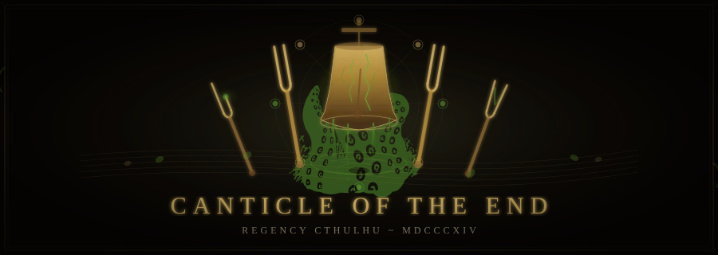

Canticle of the End
In-Game DateSpring 1814
The Team
A
Adrien_de_Montferrand
ActiveHosts Palais Kinsky · Order of St. Aelfric member · Delivered killing blow to Nightgaunt · Led charge to Polizeidirektion
C
Charlotte_Thorne
ActiveNorthumberland heiress · Steady under pressure · Deeply skeptical (pre-Nightgaunt) · Rationalist disarmed by direct Mythos encounter · Retired from field operations Session 7
E
Emma_Wentworth
ActiveTheatre-obsessed · Brave in combat · Bit Nightgaunt's neck in Session 6 · Subject of Graf Sternberg's pursuit
F
Freddy_Cavendish
ActiveSocially connected · Produced Masquerade invitations · Witnessed Nightgaunt attack
G
Georgiana_Wentworth
ActiveSharp-minded · Tactical combatant · Phobias of theatre and fish · Identified Nightgaunt from Revelations of Gla'aki
K
Katherine_Ward
ActiveTrained thief and infiltrator · Moral code (no harm to innocents, no children, violence only in self-defense) · Encountered and contained Hound of Tindalos · Recruited by Order after St. Margaret's Academy incident
V
Varrio_Harrowmont
ActiveDisrupted Venice cell off-camera · PTSD from witnessing Moreau's death · Fainted at sight of Nightgaunt · Killed Brenner after Engine revelation · Extracted from captivity via Dr. Fischbein's legal intervention